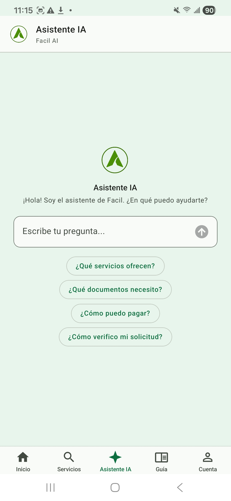

Asistente IA público
Facil incluye un asistente conversacional alimentado por IA (Gemini 2.5 Flash) que responde a sus preguntas sobre los trámites administrativos en Guinea Ecuatorial: documentos requeridos, costes estimados, plazos, procedimientos paso a paso. Disponible 24/7 sin necesidad de cuenta.
1. Acceder al asistente
Desde la pantalla de bienvenida, pulse el botón «Asistente IA» en la cabecera o el banner del carrusel. El asistente abre con un mensaje de bienvenida y 4 sugerencias de preguntas pulsables.

2. Capacidades del asistente público
El asistente puede responder a preguntas sobre:
- Trámites administrativos: pasaporte, conducir, residencia, IRPF, IVA, IS, licencias comerciales, certificados, etc. (catálogo de 873 servicios)
- Documentos requeridos: lista detallada por trámite, originales y copias
- Costes: tarifas oficiales con desglose (impuestos, suplementos eventuales)
- Plazos: tiempo de tratamiento estimado por categoría
- Procedimientos paso a paso: secuencia de etapas a seguir, lugar de cada cita
- Comparaciones: ej. «¿Cuánto cuesta abrir un restaurante en Malabo vs Bata?»
3. Sugerencias de preguntas (para empezar)
Si no sabe por dónde empezar, pulse una de las sugerencias proporcionadas:
- «¿Qué servicios están disponibles para mi DIP?»
- «¿Cuáles son los documentos para el pasaporte?»
- «¿Cuánto cuesta una licencia comercial en Bata?»
- «¿Cómo verificar mi solicitud?»
- «¿Cuál es el plazo para una renovación de carnet de conducir?»
El asistente responde con texto estructurado: subtítulos, listas numeradas, tablas si procede, enlaces directos al catálogo. Puede pulsar los enlaces para ir directamente al servicio mencionado.
4. Limitaciones sin sesión
Sin cuenta iniciada, el asistente no puede:
- Acceder a sus datos personales (no conoce su nombre, sus solicitudes, su histórico)
- Iniciar un trámite por usted — solo describe el procedimiento, no actúa
- Verificar el estado de su solicitud — para eso, inicie sesión o use la página Verificar un recibo
- Acceder a sus documentos guardados — solo en el modo conectado
Para esas funciones avanzadas (asistente personalizado, gestión de su caja fuerte digital, sugerencias proactivas), cree una cuenta y consulte la página Asistente IA conectado.
5. Privacidad y datos
- Sin grabación personal — sus preguntas no se asocian a ningún identificador (sin sesión)
- Estadísticas anónimas — solo se recolectan estadísticas globales (volumen, temas frecuentes) para mejorar el servicio
- No proporcione datos sensibles — número DIP, teléfono, dirección no son necesarios para responder a una pregunta general. Si los proporciona, no se almacenan.
- Conformidad RGPD — ver página legal para detalles sobre el tratamiento de datos